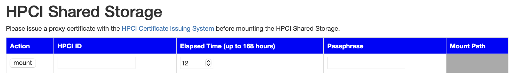

Open OnDemandの利用方法
はじめに
Open OnDemandは、Webブラウザから並列計算機システムを利用するためのWebポータルです。富岳のOpen OnDemandで提供しているアプリケーションは下記の3つにグループ分けしています。
- Batch Jobs：富岳の計算ノードに投入する実アプリケーション
- Interactive Apps：富岳やプリポスト環境で動作する対話的アプリケーション
- Passenger Apps：Open OnDemandがインストールされたサーバで動作するユーティリティ

Batch Jobs
アイコンをクリックすると、計算リソースなどを入力するためのWebフォームが表示されます。入力項目はアプリケーション毎に異なります。入力後に「Launch」をクリックすると、富岳にジョブが投入されます。
Interactive Apps
WebフォームはBatch Jobsと同じですが、「Launch」をクリック後、計算ノード上でジョブが起動するとアプリケーションへのリンクが表示されます。そのリンクをクリックすると、該当のアプリケーションをWebブラウザから利用できます。

Passenger Apps
Active Jobs
ジョブの情報を閲覧できます。ジョブの削除も可能です。

Home Directory
ファイルのアップロード・ダウンロード・削除・編集を行えます。アップロード・ダウンロード可能な最大サイズは10GBです。

rcloneを用いたクラウドストレージに対するファイル操作も可能です。Interactive AppsのRemote Desktopを起動し、ターミナルからrcloneもしくはrclone-browserを実行すると、rcloneの設定を行うことができます。その後にHome Directoryを起動すると、設定されたクラウドストレージにアクセスできます。なお、富岳ヘルプデスクではrcloneの設定のサポートは行っておりませんのでご了承ください。
HPCI共用ストレージ
HPCI (High Performance Computing Infrastructure)が提供するHPCI共用ストレージに対するファイル操作を行えます。本アプリを利用するためには、HPCI証明書発行システムから代理証明書を事前に発行しておく必要があります。
- HPCI ID：HPCIのID（例：hpci00xxxx）
- Elapsed Time：利用時間（最大168時間）
- Passphrase：代理証明書を発行したときに入力したパスフレーズ

「mount」をクリックすると、HPCI共用ストレージが富岳にマウントされます。富岳上のパスは「Mount Path」に表示されます。
GakuNin RDM
国立情報学研究所が提供する研究データ管理基盤であるGakuNin RDMに対するファイル操作を行えます。
- Mount Path：富岳側のマウントパス（例：/home/rccs-aot/a00000/abc）
- RDM Node ID：GakuNin RDMのプロジェクトのURL（https://rdm.nii.ac.jp/xxx/）のxxxの箇所
- ROM Token：GakuNin RDMのパーソナルアクセストークン

「mount」をクリックすると、指定したGakuNin RDMのプロジェクトが富岳にマウントされます。
Shell Access
Webブラウザ上でコマンドラインインタフェースを用いた操作を行うことができます。

資料
補足
- Open OnDemandのテンポラル用のディレクトリは${HOME}/ondemandです。Open OnDemandを利用すると自動生成されます。削除しても問題ありませんが、履歴やInteractive Appsでユーザがインストールした拡張機能も削除されます。
- Internet Explorer 11はサポートしていません。
- Remote Desktopでコピーアンドペーストを利用したい場合は、Chromeブラウザをご利用ください。